The following pictures show n unit circles packed inside the smallest equilateral triangle (of side length s). Most of these have been proved optimal. When m = (n2+n)/2, s = 2(n-1) + 2√3. It is conjectured that one less circle does not change this.
1.
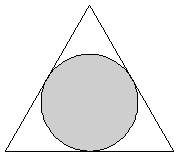
2.
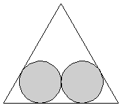
3.
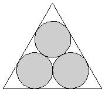
s = 2√3 = 3.464+
Trivial.
s = 2 + 2√3 = 5.464+
Trivial.
s = 2 + 2√3 = 5.464+
Trivial.
4.
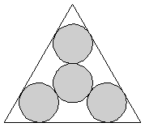
5.
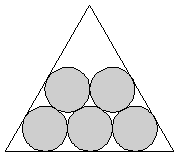
6.
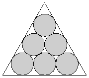
s = 4√3 = 6.928+
Proved by Milano in 1987.
s = 4 + 2√3 = 7.464+
Proved by Milano in 1987.
s = 4 + 2√3 = 7.464+
Proved by Oler/Groemer in 1961.
7.
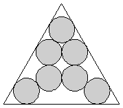
8.
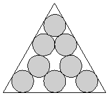
9.
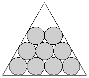
s = 2 + 4√3 = 8.928+
Proved by Melissen in 1993.
s = 2 + 2√3 + 2√33/3 = 9.293+
Proved by Melissen in 1993.
s = 6 + 2√3 = 9.464+
Proved by Melissen in 1993.
10.
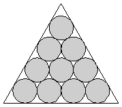
11.
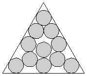
12.
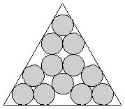
s = 6 + 2√3 = 9.464+
Proved by Oler/Groemer in 1961.
s = 4 + 2√3 + 4√6/3 = 10.730+
Proved by Melissen in 1993.
s = 4 + 4√3 = 10.928+
Proved by Melissen in 1994.
13.
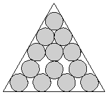
14.
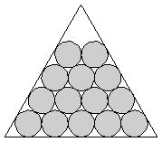
15.
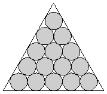
s = 4 + 2√6/3 + 10√3/3 = 11.406+
Found by Melissen in 1993.
s = 8 + 2√3 = 11.464+
Found by Erdős/Oler in 1961.
s = 8 + 2√3 = 11.464+
Proved by Erdős/Groemer in 1961.